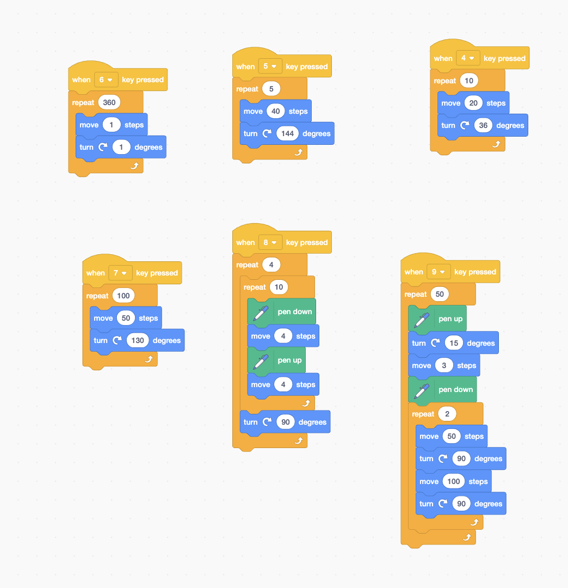
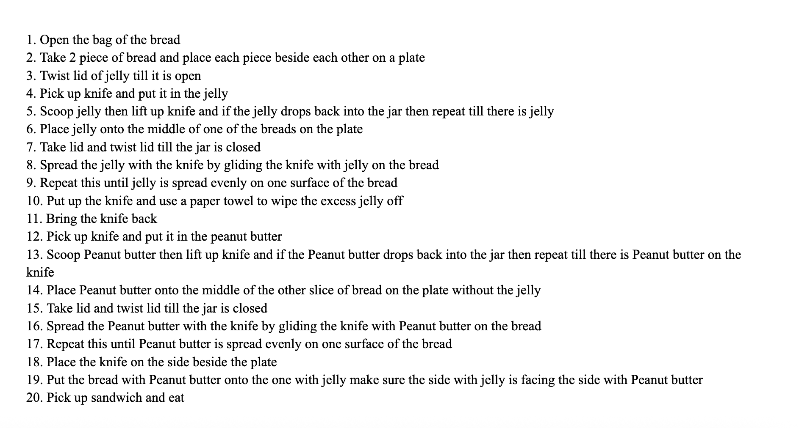
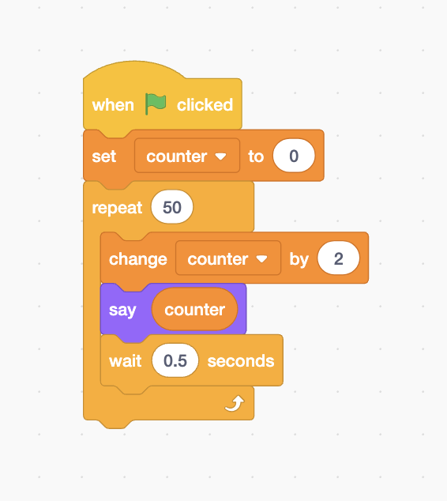

Unit 1: Problem Solving Process
In this unit, I learned how to think through problems step by step using the problem-solving process. I practiced creating algorithms and flowcharts, which helped me understand how programmers plan their code before writing it.
01 – PC Build Project

For this project, I researched computer parts and built a PC setup. I learned how each component, such as the CPU, GPU, RAM, and power supply, works together to make a computer run smoothly. It showed me why it is important to choose compatible and efficient parts.
02 – Introduction to Programming

I practiced basic coding ideas in Scratch. My project used loops, motion, and if-statements to create patterns when different keys were pressed. I saw how small changes in the code could completely change the outcome and make the program behave differently.
03 – Peanut Butter & Jelly Sandwich Algorithm

I wrote pseudocode that explains how to make a peanut butter and jelly sandwich. It helped me understand that programming is about giving clear and specific steps. If a step is missing or unclear, the program might not work the way you want it to.
1. Open the bag of bread
2. Take 2 pieces of bread and place them on a plate
3. Open the jar of jelly
4. Scoop jelly and spread evenly on one slice
5. Repeat with peanut butter on the other slice
6. Put the slices together and enjoy
04 – Implementing Algorithms

I made a simple counting program in Scratch. It used a loop that increased a counter by 2 each time and showed the number on the screen. This project taught me how loops, variables, and timing all connect in a working program.
When green flag clicked
Set counter to 0
Repeat 50 times:
Change counter by 2
Say counter
Wait 0.5 seconds
05 – Algorithm Flowchart

I created a flowchart to show how an algorithm takes input, does a process, and gives an output. Turning the flowchart into code helped me think more logically about how to organize steps and decisions.
Example Code Snippet
INPUT: side length (s)
PROCESS: area = s * s
OUTPUT: area